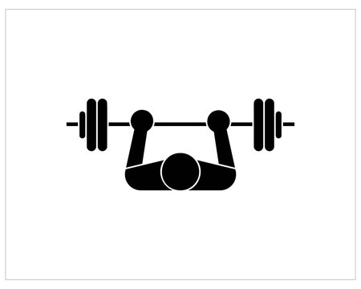

Exercise Description
Lie on a flat bench with your feet flat on the floor and a barbell positioned above your chest. Grip the barbell slightly wider than shoulder-width apart. Lower the barbell slowly to your chest, then press it back up to the starting position.
Reps and Sets
Beginners: 3 sets of 12-15 reps
Weights: 7-10 kg plates on each side of barbell
Rest time between each set: 45secs
Video Implementation